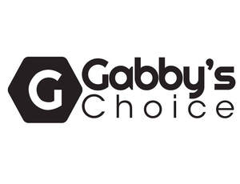

Trade Mark Journal No.2025/028 11 July 2025
UK00004229312 4 July 2025 (3,8,11,21,24)

- Class 3
- Hair shampoo; Hair shampoos; Hair relaxers; Hair dye; Hair pomades; Hair texturizers; Hair conditioner; Hair mousse; Hair lighteners; Dyes for the hair; Hair dyes; Hair mascara; Hair bleaches; Hair bleach; Hair colourants; Hair serums; Hair lotion; Hair lotions; Hair cosmetics; Hair gel; Hair moisturizers; Hair rinses; Hair mousses; Hair conditioners; Hair color; Hair styling lotions; Hair wax; Hair sprays; Hair colouring; Hair moisturisers; Hair spray; Hair oils; Shampoos for human hair; Hair styling gel; Hair creams; Hair cream; Hair colorants; Hair gels; Hair emollients; Hair nourishers; Hair powder; Styling sprays for the hair; Baby hair conditioner; Tints for the hair; Hair tonics; Hair chalks; Hair oil; Hair styling waxes; Hair lacquer; Hair masks; Hair lacquers; Hair styling spray; Hair balsam; Hair balm; Styling gels for the hair; Hair balms; Hair styling gels; Colouring lotions for the hair; Hair tonic; Styling paste for hair; Hair liquid; Hair glaze; Hair glazes; Non-medicated hair shampoos; Hair rinses [for cosmetic use]; Hair and body wash; Cosmetic preparations for the hair and scalp; Hair liquids; Shampoo; Dandruff shampoo; Shampoos; Waterless shampoo; Baby shampoo; Baby shampoo mousse; Shampoo bars; Dry shampoos; Emollient shampoos; Waterless shampoos; Non-medicated shampoos; Hair moisturising conditioners; Hair conditioner bars; Shampoos for babies; Hair rinses [shampoo-conditioners]; Non-medicated hair lotions; Cosmetic hair lotions; Mousses [toiletries] for use in styling the hair; Oils for hair conditioning; Shaving soap; Hair care lotions; Conditioners for treating the hair; Hair tonic [non-medicated]; Hair tonic [for cosmetic use]; Hair conditioners for babies; Shaving soaps; Shaving lotions; Aftershave lotions; Hair care lotions [for cosmetic use]; Hair tonics [for cosmetic use]; After-shave gel; Conditioners in the form of sprays for the scalp; Hair-washing powder; Gels for fixing hair; Depilatory lotions; Soap products; Conditioners for use on the hair; Cleaner for cosmetic brushes; Wax strips for removing body hair; Wax treatments for the hair; Hair piece bonding glue; Massage oil; Cuticle oil; Cleansing oil; Shaving oil; Body oil; Facial oil; Wax (Depilatory -); Depilatory wax; Eyebrow styling wax; Depilatory waxes; Massage waxes; Shave gel; Shave balm; Shave creams; After shave lotions; Shaving lotion; Shaving gel; Shaving balm; Shaving cream; Shaving balms; Shaving mousse; Shaving oils; Shaving gels; Shaving sprays; Shaving creams; Foams for use in shaving; Shaving foams; Hair removal and shaving preparations; Shaving foam; Foam for use in shaving; Epilating waxes; Preparations for use after shaving; Preparations for use before shaving; Pre-shave creams; Facial wash; Hair grooming preparations; Facial lotion; Depilatory creams; Depilatories; Depilatory preparations; Depilatory sugar paste; Aftershave creams; Facial creams [cosmetics]; Cosmetic creams and lotions; Non-medicated scalp treatment cream; Anti-wrinkle creams [for cosmetic use]; After-shave; Cosmetic massage creams; Hair care creams [for cosmetic use]; Anti-wrinkle cream [for cosmetic use]; Cosmetic creams for the skin; Skin creams [cosmetic]; Moisturising skin creams [cosmetic]; Facial creams [cosmetic]; Cream for whitening the skin; Creams (Cosmetic -); Cosmetic creams; Anti-ageing creams [for cosmetic use]; Moisturising skin lotions [cosmetic]; Shaving preparations; Hair desiccating treatments for cosmetic use; Cosmetic facial lotions; Facial lotions [cosmetic]; Anti-wrinkle creams; Body and facial creams [cosmetics]; Skin cleansing cream [non-medicated]; Skin creams [non-medicated]; Cosmetic hair regrowth inhibiting preparations; Cosmetic creams for dry skin; Hydrogen peroxide for use on the hair; Hydrogen peroxide for cosmetic purposes; Bleach; Bleaching salts; Bleaches for use on the hair; Nail polish; Nail varnish; Varnish (Nail -); Nail glitter; Nail gel; Nail varnishes; Nail enamel; Nail strengtheners; Nail hardeners; Nail makeup; Nail enamels; Nail polish removers; Nail cosmetics; Nail polish remover; Nail tips; Nail polish pens; Nail whiteners; Nail cream; Nail enamel remover; Nail varnish removers; Nail enamel removers; Gel nail removers; Nail polish remover pens; Nail conditioners; Nail paint [cosmetics]; Nail hardeners [cosmetics]; Nail polish removers [cosmetics]; Nail polish top coat; Nail polish base coat; Nail primer [cosmetics]; Nail tips [cosmetics]; Nail varnish remover [cosmetics]; Nail art stickers; Nail decolorants; Nail polishing powder; Nail buffing preparations; Nail base coat [cosmetics]; Nail varnish removing preparations; Nail varnish for cosmetic purposes; Nail care preparations; Cosmetic nail preparations; Nail repair preparations; Skin, eye and nail care preparations; Powder for forming sculpted finger nail tips; Dressings for nail reconstruction; Cosmetic nail care preparations; Cosmetic preparations for nail drying; Glue for strengthening nails; Nails (False -); False nails; Artificial nails; Fingernail decals; Polish; Lotions for strengthening the nails; Adhesives for false eyelashes, hair and nails; Adhesives for fixing false nails; Adhesives for artificial nails; Preparations for removing gel nails; Fingernail tips; Shoe polishes; Nail-polish removers; Body polish; Hair straightening preparations; Hair curling preparations; Hair protection mousse; Paper hand towels impregnated with cosmetics; Moist paper hand towels impregnated with a cosmetic lotion; Paper hand towels impregnated with cleaning agents.
- Class 8
- Hair clippers; Hair straightening irons; Hair clippers for babies; Electric hair straighteners; Electric hair braiders; Hair braiders, electric; Hair cutting scissors; Cuticle tweezers; Hand-operated hair clippers; Tweezers; Hair-removing tweezers; Cuticle scissors; Non-electric hair clippers; Electric hair clippers; Shaving blades; Razors; Straight razors; Razor blades; Hair clippers for personal use; Disposable razors; Electrolysis apparatus [depilatory]; Depilation appliances; Electric and non-electric depilatory appliances; Depilation appliances, electric and non-electric; Nail clippers; Nail scissors; Nail nippers; Nail buffers for use in manicure; Nail punches; Nail files; Nail buffers; Nail extractors; Extractors (Nail -); Nail polishers (Electric -); Nail skin treatment trimmers; Electric nail files; Nail files, electric; Nail polishers (Non-electric -); Nail files, non-electric; Electric nail buffers; Nail nippers [hand tools]; Roller head refills for electronic nail files; Roller heads for electronic nail files; Fingernail clippers; Manicure and pedicure tools; Cuticle nippers; Scissors; Hairdressing scissors; Scissor blades; Manual clippers; Hair clippers for personal use, electric and non-electric; Electric crimping irons for the hair; Electric hair curling irons; Electric hair straightening irons; Electric irons for styling hair; Electric hair crimper; Electric hair crimpers; Electric hand-held hair styling irons; Electric hair cutters; Electric hair trimmers; Electric curling tongs; Non-electric hand implements for hair curling; Hair styling appliances; Curling tongs; Hair curling (Hand implements for -); Crimping irons; Non-electric flat irons.
- Class 11
- Dryers (Hair -); Hair dryers; Driers (Hair -); Hair driers; Hair driers for use in beauty salons; Shampoo bowls; Shampoo basins for barbers' shop use; Towel steamers for hair salons; Depilatory wax heaters; Nail lamps; LED nail drying apparatus; Hair steamers for beauty salon use; Hair steamers for use in beauty salons; Hair driers [dryers]; Hair dryers [for household purposes]; Fans for hair drying; Apparatus for drying the hair; Hair drying apparatus; Apparatus for drying hair; Hair drying machines for beauty salon use; Electric hair dryers; Electrical hair driers; Hand-held electric hair dryers; Stationary hair dryers; Travel hair dryers; Hair drying appliances; Appliances for drying hair; Holders adapted for hair dryers; Towel steamers; Electric towel warmers.
- Class 21
- Hair combs; Combs for back-combing hair; Hair for brushes; Hair brushes; Large-toothed combs for the hair; Combs for the hair (Large-toothed -); Electric hair combs; Shampoo dispensers; Shampoo racks; Shampoo shields; Shampoo holders; Hair fixer dispensers; Brushes; Brush holders; Shaving brush holders; Shaving brush stands; Brushes (except paint brushes); Eyeliner brushes; Mascara brushes; Nail brushes; Shaving brushes; Eyelash brushes; Lip brushes; Shampoo brushes; Eyebrow brushes; Exfoliating brushes; Make-up brushes; Hair tinting brushes; Combs; Comb (electric); Comb cases; Cases (Comb -); Wide tooth combs for hair; Eyelash combs; Electric combs; Shaving dishes; Shaving pots; Shaving stands; Shaving bowls; Stands for shaving brushes; Holders for shaving brushes; Stands for shaving utensils; Cosmetic spatulas for use with depilatory preparations; Combs (Electric -); Hot air hair brushes; Electric rotating hair brushes; Electrically heated hair brushes; Holders for towels; Towel baskets; Rings for towels [bathroom fittings]; Rails and rings for towels; Rings (Rails and -) for towels; Towel racks; Towel rings; Towel rails.
- Class 24
- Turban towels for drying hair; Textile hair drying towels; Towels; Bathroom towels; Terry towels; Towels of textiles; Hand towels; Hooded towels; Turkish towels; Towels of textile; Towels [textile]; Towels [of textile]; Face towels; Face towels of textiles; Face towels of textile; Turkish towel; Face cloths of towelling; Make-up removal towels [textile] other than impregnated with toilet preparations.
Nevzat Ozmeral